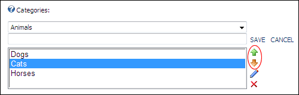

Reordering Repository Categories
How to reorder categories on the Repository module.
-
- Select the Repository Settings tab.
- At the Categories drop down list, select <root> to reorder parent categories or select a parent category to reorder its child categories.
- In the Categories text box, select the category to be moved.
- Click the Up
 or Down
or Down  buttons to re-order.
buttons to re-order.
- Repeat Steps 3-5 to reorder additional categories.
Tip: You do not need to click the Update button to save these changes.

Reordering categories